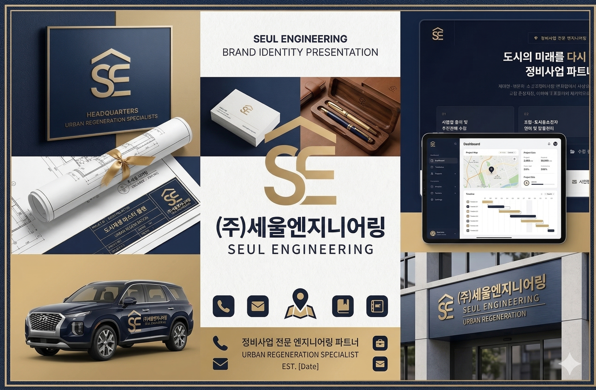

The Path of SEUL
절차의 정합성,
실행의 책임
정비사업의 기준을 바로 세우고, 사업의 가치를 끝까지 완성하는 세울엔지니어링의 길
절차의 정합성
법과 원칙에 기반한 실무
이해관계 조율
조합·행정·시공 균형 자문
단계별 추진
기획부터 준공까지 로드맵
책임지는 완결
사업 완료까지 동행
정비사업의 기준을 바로 세우고, 사업의 가치를 끝까지 완성하는 세울엔지니어링의 길
법과 원칙에 기반한 실무
조합·행정·시공 균형 자문
기획부터 준공까지 로드맵
사업 완료까지 동행
무너진 도시의 질서를 다시 세우고, 흐트러진 절차를 바로 세우고,
사업의 가치를 올곧게 세우는 것.
그것이 세울엔지니어링이 걸어가는 길입니다.
쉬운 길이 아니라 옳은 길을 택했고,
그 선택이 세울의 정체성이 되었습니다.
도시정비사업은 단순한 건설 행위가 아닙니다. 수십 년간 삶의 터전이었던 공간을 허물고, 그 위에 새로운 공동체를 세우는 일입니다.
수백, 수천 명의 재산권이 걸려 있고, 행정기관의 인허가와 법률적 판단이 매 단계마다 뒤따릅니다. 하나의 절차가 어긋나면 수년간의 노력이 무너질 수 있는, 가장 엄밀함을 요구하는 분야입니다.
우리가 도시정비에 집중하는 이유는 명확합니다. 이 분야야말로 전문가의 양심과 역량이 가장 절실하게 필요한 영역이기 때문입니다.
전문가의 양심이 필요한 분야에서, 기준을 세우는 회사가 되겠습니다.
조합원·시행사·시공사·행정기관 사이의 균형점을 찾아냅니다
도시정비법을 비롯한 관련 법령에 기반한 정확한 절차 이행
경제적 타당성과 공익적 가치를 동시에 실현하는 설계
보고서 위의 전략이 아닌, 현장에서 결과를 만들어내는 역량
법령과 지침에 근거한 정확한 절차를 준수합니다. 모든 의사결정은 법적 기반 위에서 이루어집니다.
모든 공문서·보고서·의사록을 엄밀하게 작성합니다. 기록의 정확성이 곧 사업의 신뢰입니다.
어느 한쪽에 치우치지 않는 중립적 관점으로 최선의 합의점을 도출합니다.
계획에서 그치지 않고 현장에서 결과를 만들어냅니다. 실제 인허가 취득과 사업 진행으로 증명합니다.
맡은 사업장에 대해 끝까지 책임집니다. 어떤 난관에서도 해법을 찾아냅니다.
조합 운영의 모든 과정을 투명하게 공개하고, 신뢰를 기반으로 소통합니다.
사업 대상지의 법적·물리적 현황을 분석하고 추진 가능성을 진단합니다
비례율·분담금·총사업비를 분석하여 사업의 경제적 타당성을 검증합니다
조합원·행정기관·시공사 간 이해관계를 조정하고 합의를 이끌어냅니다
인허가 서류, 총회 자료, 공문을 법적 기준에 맞게 체계적으로 관리합니다
사업시행인가, 관리처분인가 등 핵심 인허가를 실행력 있게 추진합니다
착공부터 준공·입주·청산까지 사업의 마지막 단계를 책임지고 완결합니다


세울엔지니어링은 단순한 사업 자문을 넘어,
도시정비의 기준을 만들어가는 회사가 되겠습니다.
절차의 투명성, 사업의 실현 가능성, 조합원의 이익 보호 —
이 세 가지를 한 번도 타협하지 않는 회사.